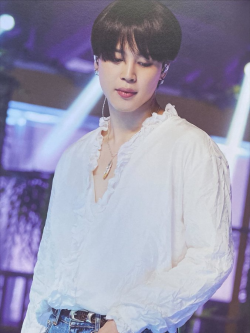
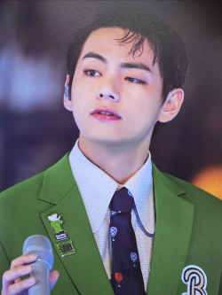
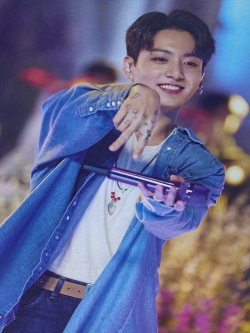
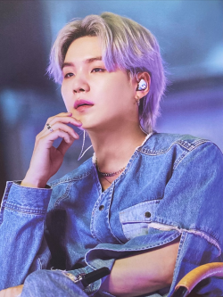
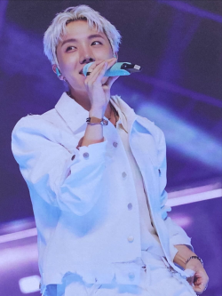
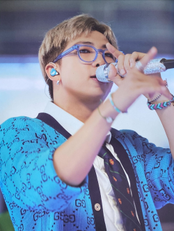

-
JIN VOCALISTA
Kim Seokjin o Jin, es el de mayor edad de BTS. Con 29 años, es considerado como el mentor de la joven banda de K-Pop. Es uno de los vocalistas principales y usualmente es tildado como el “galán” del grupo por sus fotografías en Instagram.
Pero no solo su belleza física y su prodigiosa voz son las características que más destacan de Jim, sino que su habilidad con la guitarra y el piano también son dignas de destacar. Su destreza la ha demostrado con la interpretación de “Epiphany”, del disco “Love Yourself: Answer”.
-
JIMIN VOCALISTA Y BAILARÍN
Park Jimin, de 25 años, es considerado uno de los vocalista de BTS. Además, es uno de los tres bailarines principales por sus habilidades. Sin embargo, ser un prodigio en el baile no es ninguna casualidad, ya que se debe a que estudió en la escuela de danza contemporánea y busca expresar con sus movimientos la letra de sus canciones.
- 
-
V BAILARÍN Y VOCALISTA
El joven Kim Taehyung, de 26 años, decidió llamarse V, por una sencilla pero potente razón, es la inicial de “victoria”. Asimismo, esta letra también describiría su versatilidad en el ámbito artístico por su habilidad para el canto y el baile. Su encanto lo ha convertido en uno de los más populares de la agrupación.
- 
-
JUNGKOOK VOCALISTA Y BAILARÍN
Jeon Jungkook es el miembro más joven de BTS con 24 años de edad, creciendo a la par de los éxitos de la banda. Además, se ha ganado el cariño del A.R.M.Y. por su talento en el canto y el baile.
Pese a ser el menor del grupo, es considerado un prodigio porque sus habilidades artísticas no solo se limitan al canto, rap y baile, sino que también sabe dibujar, editar videos, tomar fotografías, entre diversos talentos. - 
-
SUGA RAPERO
Min Yoongi, más conocido como Suga, es uno de los tres principales raperos del grupo. A sus 29 años, él también es uno de los miembros de mayor edad, por lo que también es uno de los mentores. Su apodo viene por la posición favorita en el básquetbol como escolta, pero algunos comentan que en verdad fue Bang quien escogió ese apodo para él por su personalidad: dulce y generosa.
- 
-
J-HOPE BAILARÍN Y RAPERO
Jung Hoseok, mejor conocido como J-Hope, tiene 28 años, y se ha convertido en uno de los principales compositores de BTS, bailarín principal y uno de los tres raperos a la cabeza de la agrupación.
Uno de sus más recientes logros fue en marzo del 2018 cuando lanzó su primer y tan esperado mixtape "Hope World", de siete canciones y que posicionó en el Top 40 de los Billboard 200. - 
-
RM LÍDER Y RAPERO PRINCIPAL
Kim Namjoon, mejor conocido por su nombre artístico RM, es un rapero de 27 años y fue el primer integrante de BTS. Antes de integrar la banda de K-Pop, se hizo conocido en la movida subte junto a su amigo Zico, que luego llegaría a liderar el grupo “Block B”.
Tras ser recomendado directamente a Bang, fue reclutado por su estudio. Debutó en la escena musical con el nombre de “Rap Monster”, pero después decidió cambiarlo a RM, para que este reflejara su forma de vida con una mente más abierta. - 